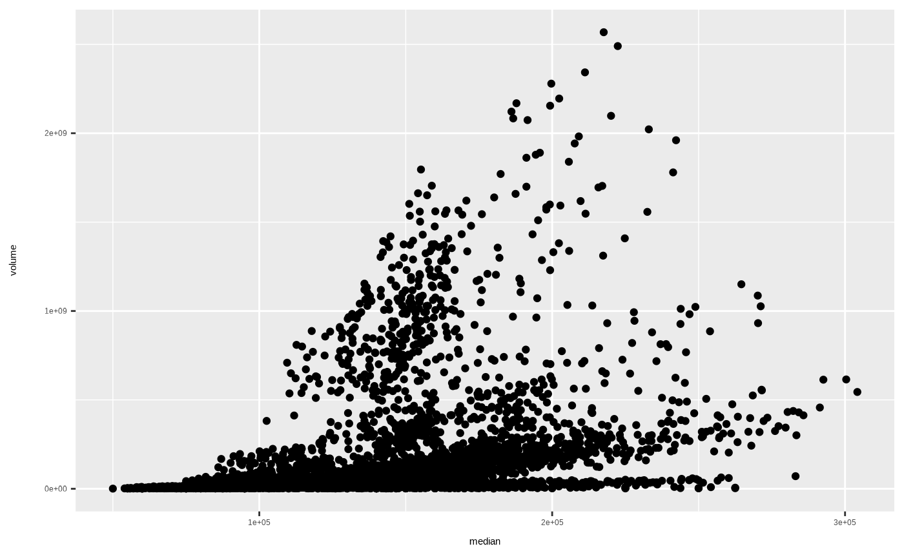
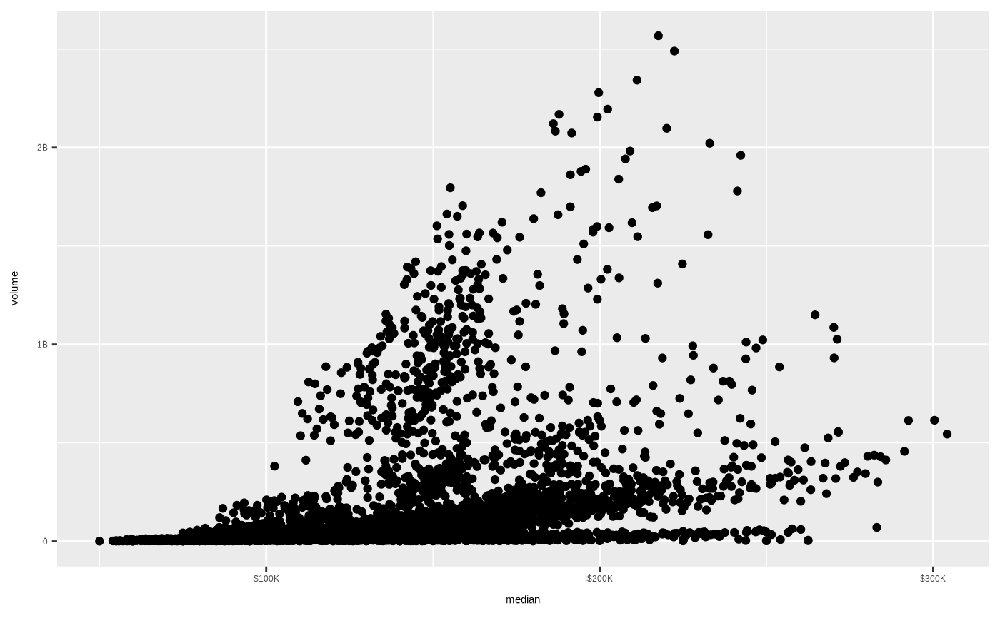

Use format_number_hdx() to directly format numeric vectors, and use label_number_hdx()
in the same way as the scales:: family of label functions. The return value of
label_number_hdx() is a function, based on the additional_prefix. So you
should pass it in to scales_...() labels parameter in the same way as
scales_...()
label_number_hdx(additional_prefix = "")
format_number_hdx(x, additional_prefix = "")Additional prefix to add to string, that will come
between sign_prefix and the number. For example, "$" could produce a
return value of -$1.1K.
Numeric vector to format
label_number_hdx(): "labelling" function, in the same way as scales::label_...()
functions work, i.e. a function that takes x and returns a labelled character
vector of length(x).
format_number_hdx(): Formatted character vector of number strings
Numeric vectors are formatted in the HDX style for key figures, which abbreviates numbers 1,000 and above to X.YK, 10,000 and above to XYK, 100,000 and above to XYZK, and the same for 1,000,000 and above, replacing the K with an M, and the same for B. Details of the data viz style can be found in the visualization guidelines
Just for continuity, values are labeled with T for trillion, and that is the maximum formatting available, anything above the trillions will continue to be truncated to report in the trillions.
Deals with negative values in case those ever need to be formatted in similar
manners. Also ensures that rounding is performed so numbers look correct.
Not to be used for percents, which should just use scales::label_percent().
# label_number_hdx()
library(ggplot2)
# discrete scaling
p <- ggplot(txhousing) +
geom_point(
aes(
x = median,
y = volume
)
)
p
#> Warning: Removed 617 rows containing missing values or values outside the scale range
#> (`geom_point()`).

p +
scale_x_continuous(
labels = label_number_hdx("$")
) +
scale_y_continuous(
labels = label_number_hdx()
)
#> Warning: Removed 617 rows containing missing values or values outside the scale range
#> (`geom_point()`).

# number_hdx()
x <- c(1234, 7654321)
format_number_hdx(x)
#> [1] "1.2K" "7.7M"
format_number_hdx(x, "$")
#> [1] "$1.2K" "$7.7M"